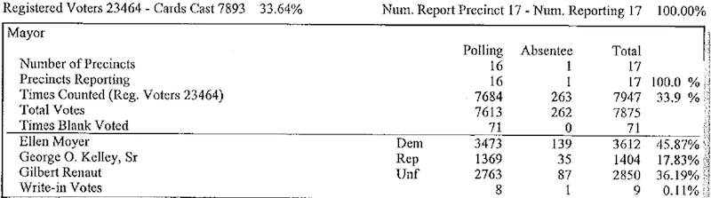
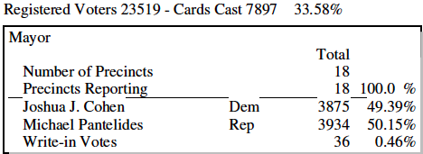

Campaign Strategy for Political Campaigns
12 min read
Summary
Running a Local Campaign comes with its own problems from the lack of resources to the lack of coverage from the media, and while some you have control over others are just part of the environment.
Basics
Before you do anything you need to figure out how many voters you will need, how many voters are there, and how many show up in any given election. This information is publicly available on election boards websites. Below is an example of the Annapolis Mayor Race.
To start, we take the last three elections 2005, 2009 and 2013 to determine our goals and whether it is possible to run for the local office, by looking at the election summary reports:
Annapolis 2005 Mayor Election

Annapolis Previous Election Results
Annapolis 2009 Mayor Election
Annapolis Previous Election Results
Annapolis 2013 Mayor Election

Annapolis Previous 2013 Election Results
The key take away from these summary reports are:
- Voter turn out is between 33% and 35%
- 3rd Parties are an issue
- 4000 votes is the ideal target
Once you know the number of votes you need your next step is to look at voter registration to see how many of the votes can come from registered party members. Depending on the race you can get the voter registration number from your state election board. Alternatively you can acquire a voter registration list. If Party registration for one party is 2X higher than the other there is a good chance winning in a general election is a long shot, which makes getting volunteers and money much harder.
Strategy
Who you target and what you message is can be found out most easily by doing polling and while most polling firms will defend that you should constantly be polling, for down ballot races you can be more sporadic, but you should poll throughout the campaign even if it’s once or twice a month. This is because over a 9+ month long campaign national and local news can change what people are concerned about, and it gives you a 10,000 foot view of the race
The other major thing you will have to do is target voter, which you can read more here: How to Target Voters for a Political Campaign
Grassroots
They had a lot of their own thoughts on what went wrong … Mook had pinched pennies and failed to put organizers on the ground
Shattered: Inside Hillary Clinton’s Doomed Campaign
Grassroots efforts are often the best strategy because it is considered the best form of voter contact, but it is also the most resource intensive for this reason unless you have 20+ hours volunteers, which for a local campaign is mostly friends, family, and yourself, a week you won’t be able to reach enough voters to justify the cost and time of the program. If you do have the manpower to pull it off though it should be the first thing that you start when you launch your campaign, and the earlier you start the more effective it will be.
Related Article Grassroots Volunteer Math
Mailers
A mail based strategy is one of the oldest political and issue campaign strategy, but it’s one of the most effective. This is because while digital might seem like a better option for local campaigns your audience is going to be older, and they still use and check their mail unlike those under 40.
When you design a mailer campaign, there are some things to keep in mind: 1. Bigger is better: You want to make sure that is can be seen through all the junk mail.
-
Keep the copy simple: the voter should be able to understand the candidate’s message and read between the mailbox and their front door.
-
Target your message: mailers are great at getting different messages to different people so make good use of this by sending targeted messages to voters, but not ones that contradict each other.
Digital
Digital outreach efforts fall into 2 groups the first is paid digital ads. These are the ads you have seen on social media, and at the top and bottom of the search engines. The other king of Digital effort is influencers and organic. Both of which can take time that political campaigns don’t have so political campaigns focus on paid digital efforts.
Search
Using search for your digital campaign effort is the most underrated aspects in political campaigns because it is one of the hardest to understand. Unlike social media ads, search ads are based on what the user searches Google and to a lesser extent Bing and Yahoo. So when you start a search campaign you don’t want to target keywords like election 2018 or candidate smith. What you have to do is figure out what the people you are trying to reach are searching for. An example is when I was working in Colorado on the no side of Amendment 66, which was a property tax issue, we went out and work on trying to figure out what are target voters were searching the Denver suburbs and what we found was that they were searching for was they were looking for car and home care. So rather than out keywords being about taxes when target lawn care and auto care searches so our ads were placed in front of them. While there isn’t a one size fit all solution for running search ads there are a few points to keep in mind:
-
Conduct strong and thorough keyword research.
-
Make sure you keep your ads and landing pages relevant to the keywords.
-
Use negative broad and exact match search to help better target and keep cost down.
Social
Paid social outreach is both easier and more effective with Facebook is the platform you should use for your political campaign. This is because it allows you to better target voters based off lists and interests, allowing you to better reach the voters your political or issue campaign is trying to reach.
In contrast, Twitter and Snapchat collect less information on it’s users making targeting must less effective because who people follow is less productive than what people give Facebook, and while Linkedin can be useful it is much more expensive than Facebook.
TV
While television is often the most common way to reach voters for federal races it is one of the worse ways to reach voters at the local level. This is for 3 main reasons:
-
Too broad an area: TV media markets can be much larger than the area you are trying to target, and in some instances cross state lines. A great example is any local races in New Jersey. Because the 2 markets are the New York and Philadelphia markets so if you were to run an ad for county commissioner you would end up not only having your ad run in other counties but other states.
-
Cost is higher than alternatives: TV ads can be expensive and can vary depending on your markets, but overall digital and mailers will be cheaper because there is higher inventory (IE. places on Facebook and Google for ads to show) or you don’t have to worry about there being any inventory issues.
-
Can’t measure results well: With the rise of digital the information that you can get from your ad buys has grown greatly. Not only can you tell how many people saw your ad, but what they did when they interacted with the ad, but also are able to retarget them if the campaign was targeting them for a specific action (. I donate or sign-up).
Other
While there are other things a campaign can do.IE bumper stickers, yard signs, sign waving, billboards, and print ads. I would skip most of them because they don’t have any real effect and in the case for yard signs, despite neighborhoods being flooded with them come election, they are a logistical nightmare and a waste of money compared to the other strategies above.
Related article: My Problem With Yard Signs
The only exception to this list that I still consider is using print ads, but there are some rules you should follow. One stick with local papers, and the best time to use print ads are in an off cycle (not even number year) elections for down ballot races where the voters are older and the area doesn’t have a narrow or a cheap media market.
Going Negative
While it seems most candidates go negative, it happens less often than you think. This is because outside competitive Federal races there is just no reason to spend money raising you oppositions name ID. A great example of going negative gone wrong is the 2014 Republican primary in Virginia 7th Congressional District between House Majority Leader Eric Cantor and David Brat, and while it was a major upset most of the damage was done by Eric Cantor.
For Cantor and his advisers, taking the election “seriously” meant brutally defining Brat (through lots of television ads) before the “liberal college professor” could ever hope to define himself.
Five Thirty Eight
By spending money to raise his opponent name ID he was helping him more than hurting him because he was making Rep. Brat looks like a serious threat rather than a passing thought. Eric Cantor’s campaign also helped raise awareness of his opponent to people who might have been dissatisfied with his performance, but didn’t know there was a challenger.
Rule a thumb is to always spend time introducing your self to the voters
Media Attention
The biggest problem that I have heard and experienced from local races is that they aren’t being covered by the media enough. The problem for all local candidates is that unless you say or do something controversial. This is just a fact of life for a local campaign, but one of the things that has always helped is having a contact at local newspapers and blogs.
When you reach out to local newspapers make sure that you understand 3 major things:
-
They are doing you a favor don’t go into your outreach thinking what’s good for you is good for them.
-
Make sure you reach out to them before you need them. This is basic PR 101, they shouldn’t just be hearing of you right as you need them.
-
The media are never your friend make sure that you keep them at arms length, and not to trust them with anything that you aren’t ok with being public.
Bring it all Together
For a bootstrap political and issue campaign, it is best to stick with mailers and digital, with any volunteer you can get done phone banking. For local campaigns you are going to have less time than you think with about 5 to 9 months till the election. So the best thing you can do is to use your time introducing your self to voters by running target digital ads to those under 45 and target mailers to those over 45, and to get volunteer, you need to start early by going to political groups especially the less established ones if you are challenging an incumbent in your primary. As your campaign grows your ability to expand your efforts will too, and that’s when you can incorporate a more aggressive grassroots or tv ads into your campaign.